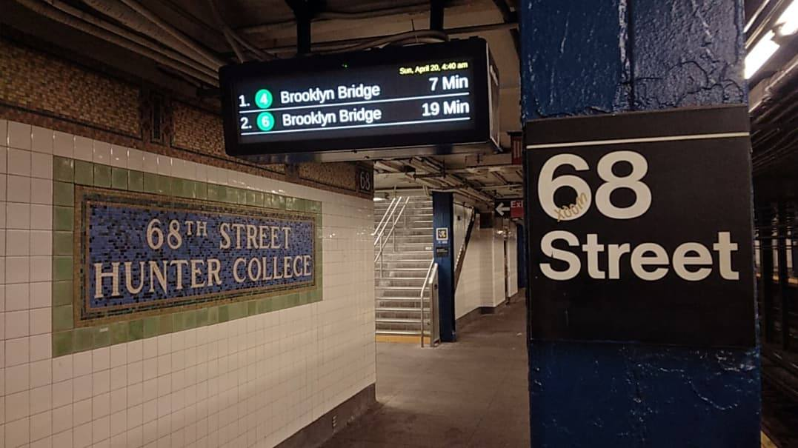

You leave class late and hurry down the subway stairs. The station is nearly empty. The lights buzz overhead, and the platform feels colder than usual.
As you walk toward the train, you hear a strange sound echo from deeper inside the tunnel. You stop for a moment. It could be nothing. Or it could be something you should not ignore.
